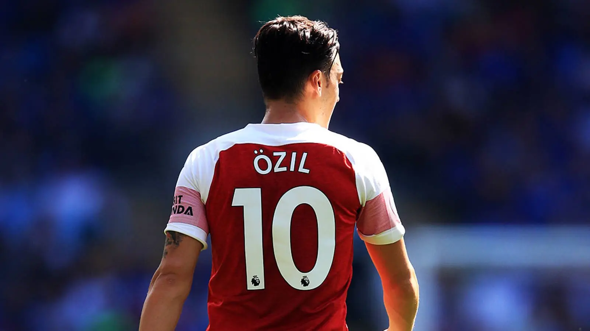
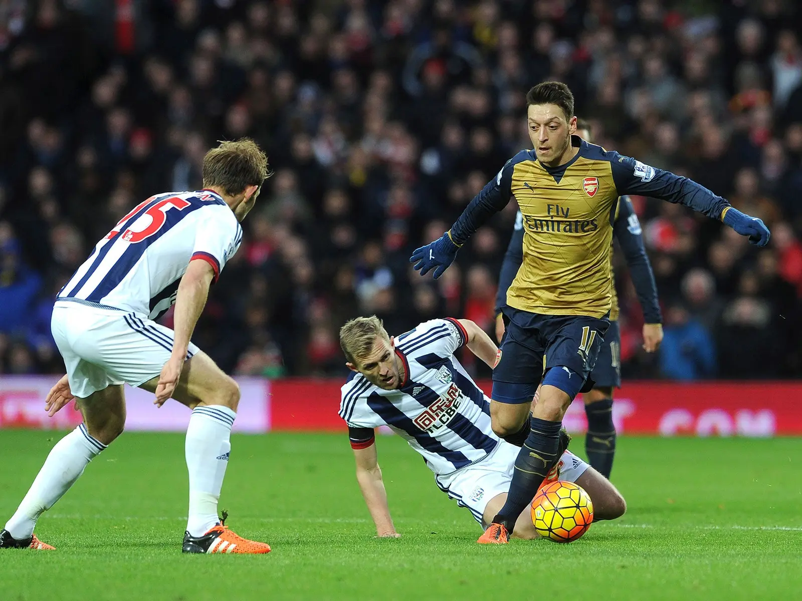
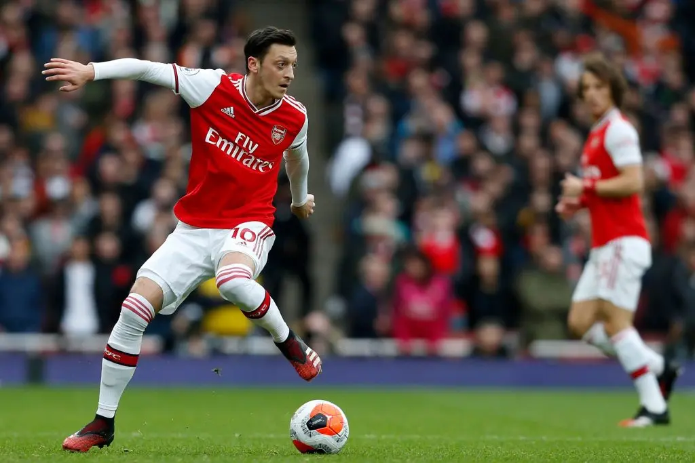

Arsenal · Mesut Özil
The Language
Football Forgot.
Mesut Özil và một thứ bóng đá được nói bằng khoảng trống, sự im lặng, cùng những đường chuyền nhìn thấy tương lai sớm hơn tất cả.

Có những ngôn ngữ không chết vì chúng không còn đẹp, cũng không biến mất vì những điều chúng từng nói đã trở nên vô nghĩa, chúng chỉ chậm rãi lùi khỏi đời sống khi thế giới chung quanh bắt đầu chuyển động quá nhanh, khi những người từng sử dụng chúng lần lượt rời đi, khi những âm tiết từng khiến người ta rung động không còn đủ lớn để vượt qua tiếng ồn của một thời đại mới, rồi tới một ngày, thứ ngôn ngữ đó vẫn còn nằm nguyên trong sách, vẫn đẹp, vẫn chính xác, vẫn có thể chạm tới những phần sâu nhất trong lòng người, nhưng không còn ai đủ kiên nhẫn để dừng lại và lắng nghe nữa.
Mesut Özil chơi bóng bằng một thứ ngôn ngữ như vậy.
Ngày anh tới Arsenal vào năm 2013, người ta chưa nghĩ về sự lạc thời, cũng chưa nghĩ rằng có ngày chính thứ bóng đá khiến cả Emirates nghiêng người về phía trước sẽ trở thành một điều xa lạ. Khi đó, Arsenal vừa trải qua nhiều năm nhìn những cái tên lớn nhất lần lượt bước khỏi cánh cửa, nhiều năm học cách sống bằng sự tiết chế, bằng những lời hứa về ngày mai, bằng niềm tin rằng một câu lạc bộ từng đứng trên đỉnh nước Anh rồi sẽ tìm lại được dáng hình cũ của mình. Và rồi Özil xuất hiện từ Real Madrid, trở thành bản hợp đồng kỷ lục của Arsenal, không chỉ như một cầu thủ mới mà như một câu nói đã lâu người hâm mộ không còn được nghe: rằng Arsenal vẫn còn đủ lớn để một trong những ngôi sao đẹp nhất của bóng đá châu Âu chọn khoác lên mình màu áo đỏ trắng.
Có những cầu thủ được nhớ vì những danh hiệu họ mang về, có những người được nhớ vì những bàn thắng đã làm nên lịch sử, còn cũng có những người chỉ cần bước qua cánh cửa đã đủ khiến cả câu lạc bộ nhìn thấy bản thân mình bằng một ánh mắt khác.
Özil thuộc về kiểu thứ ba.
Sự xuất hiện của anh không lập tức biến Arsenal thành nhà vô địch, không xóa đi mọi giới hạn của một đội bóng vẫn còn nhiều khoảng trống, nhưng nó khiến người ta tin rằng những năm tháng chỉ biết đứng ngoài nhìn các ngôi sao thuộc về nơi khác có lẽ đã sắp kết thúc. Tên anh xuất hiện sau lưng chiếc áo số 11, rồi sau này là số 10, đôi mắt luôn đảo qua mặt sân như đang đọc một bản thảo mà những người còn lại chỉ mới nhìn thấy trang bìa, và mỗi khi trái bóng tìm tới chân anh giữa hai tuyến, Emirates lại mang một thứ cảm giác rất đặc biệt, không hẳn là tiếng reo hò, cũng chưa phải sự bùng nổ, mà giống khoảnh khắc cả khán đài đồng loạt hít vào, bởi tất cả đều biết một điều gì đó có thể sắp được viết ra.
Özil không chơi bóng bằng quá nhiều động từ.
Anh không cần chạy để buộc người ta phải nhìn thấy mình đang chạy, không cần va chạm để chứng minh rằng mình hiện diện, không cần xé tung trận đấu bằng sức mạnh hay biến mỗi lần chạm bóng thành một lời tuyên bố lớn. Thứ bóng đá của anh được tạo nên từ những khoảng dừng, từ một lần ngước mắt tưởng như rất bình thường, từ vài bước chân nhẹ tới mức gần như không để lại dấu vết trên mặt cỏ, rồi bất chợt là một đường chuyền trượt qua hàng phòng ngự như một dòng chữ được viết bằng loại mực chỉ mình anh nhìn thấy.
Anh không chuyền trái bóng tới nơi đồng đội đang đứng.
Anh chuyền nó tới nơi họ sắp trở thành.
Đó là ngữ pháp của Özil, một thứ ngữ pháp trong đó khoảng trống cũng có tiếng nói, sự im lặng cũng mang ý nghĩa, còn một đường chuyền không chỉ là cách đưa trái bóng từ người này sang người khác mà là khả năng nhìn thấy tương lai sớm hơn tất cả vài giây. Những tiền đạo chung quanh anh nhiều khi chỉ cần tiếp tục chạy, bởi phần khó nhất của pha bóng đã được giải quyết trong đầu người đàn ông có đôi mắt luôn nhìn hơi lệch khỏi nơi mọi người đang nhìn.
Có những đường chuyền giống một dấu phẩy, giúp pha tấn công được thở thêm một nhịp. Có những đường chuyền giống dấu hai chấm, mở ra điều sắp xảy tới. Và cũng có những đường chuyền của Özil giống như dấu chấm hết, được đặt xuống trước khi hàng phòng ngự kịp hiểu rằng câu chuyện của họ đã kết thúc.
Mùa giải 2015/16 có lẽ là thời điểm thứ ngôn ngữ đó được nói một cách trôi chảy nhất. Özil tạo ra 19 kiến tạo tại Premier League, chỉ kém kỷ lục khi đó đúng một lần, đồng thời tạo 146 cơ hội, nhiều nhất giải đấu và là con số cao nhất trong một mùa kể từ khi dữ liệu được thống kê ở giai đoạn đó. Nhưng những con số vẫn không thể kể hết cảm giác của việc xem anh chơi bóng, bởi thống kê chỉ ghi lại nơi đường chuyền kết thúc, còn vẻ đẹp thường nằm trong khoảnh khắc trước đó, khi Özil ngước mắt lên và một khe cửa vô hình bỗng xuất hiện giữa bức tường mà mười người khác đều nghĩ là kín.

Đó cũng là sự kỳ lạ trong tài năng của anh.
Özil khiến những điều vô cùng khó trông giống như thể chẳng cần cố gắng.
Và trong bóng đá, đó vừa là món quà, vừa là lời nguyền.
Khi Arsenal chiến thắng, dáng đi thong thả của anh được gọi là sự ung dung, những cú chạm nhẹ được xem là biểu hiện của thiên tài, gương mặt gần như không thay đổi sau một đường chuyền phi thường khiến người ta tin rằng anh đang chơi một trò chơi đơn giản hơn tất cả những người còn lại. Nhưng khi Arsenal thất bại, cùng dáng đi đó lại bị gọi là hờ hững, cùng gương mặt đó bị đọc thành sự thờ ơ, cùng thứ bóng đá không để lộ sự gắng sức đó bỗng trở thành bằng chứng rằng anh không đủ quan tâm.
Tỷ số thay đổi, và ngôn ngữ cơ thể của Özil cũng bị dịch sang một ý nghĩa hoàn toàn khác.
Với những cầu thủ chơi bóng bằng sự dữ dội, người ta vẫn có thể nhìn thấy nỗ lực ngay cả trong những ngày mọi thứ không đi đúng hướng, bởi mồ hôi, những cú trượt người, tiếng hét và những bước chạy có thể đứng ra làm nhân chứng cho họ. Với Özil, sự nhẹ nhàng gần như tàn nhẫn của tài năng khiến mỗi ngày tồi tệ trông giống một ngày anh không muốn ở đó, dù có thể trong đầu anh vẫn đang tìm kiếm một đường chuyền mà những đôi chân chung quanh không còn đủ chuyển động để đón lấy.
Người ta muốn anh chạy nhiều hơn, nhưng điều đặc biệt nhất ở Özil chưa bao giờ nằm trong những mét đường anh đã chạy.
Người ta muốn anh chiến đấu theo cách có thể nhìn thấy, trong khi cuộc chiến của anh thường diễn ra giữa những khoảng trống không ai chú ý.
Người ta muốn anh hét lên để chứng minh mình quan tâm, nhưng Özil từ đầu tới cuối vẫn chỉ biết nói bằng trái bóng.
Và rồi bóng đá cũng bắt đầu thay đổi.
Các khoảng trống dần bị thu hẹp, tốc độ được đẩy lên, mỗi vị trí phải đảm nhận nhiều nhiệm vụ hơn, những số 10 không còn được phép chỉ đứng giữa các tuyến và chờ trận đấu tìm tới mình. Họ phải pressing, phải lùi sâu, phải bịt góc chuyền, phải liên tục hoán đổi vị trí, phải trở thành một bánh răng vừa vặn trong cỗ máy mà từng chuyển động đều được thiết kế trước. Bóng đá trở nên nhanh hơn, mạnh hơn, chặt chẽ hơn, thông minh hơn theo một nghĩa khác, nhưng trong quá trình đó, căn phòng dành cho những người như Özil cũng nhỏ lại từng chút một.
Không ai ban hành một đạo luật cấm sự tồn tại của số 10 cổ điển.
Người ta chỉ dần xây những đội bóng không còn cần tới họ.
Không ai bảo Özil phải ngừng nói thứ ngôn ngữ của mình.
Bóng đá chỉ làm cả căn phòng ồn lên tới mức không còn ai nghe rõ anh nữa.
Đó là lý do câu chuyện của Özil không đơn giản là câu chuyện về một cầu thủ sa sút, cũng không thể được thu gọn thành cuộc tranh luận anh lười biếng hay bị đối xử bất công. Có lẽ không ai hoàn toàn vô tội, nhưng cũng chẳng ai đủ tội lỗi để giải thích một cái kết đã được tạo nên từ quá nhiều vết nứt nhỏ. Özil có những giới hạn của mình, Arsenal có những hỗn loạn của riêng họ, còn thời đại thì không có nghĩa vụ phải dừng lại chỉ để chờ một nghệ sĩ hoàn thành tác phẩm.
Chỉ là có những lúc, giữa tất cả những tranh cãi đó, anh lại bước ra và nhắc người ta nhớ thứ ngôn ngữ kia từng đẹp tới mức nào.
Đêm gặp Leicester vào tháng 10 năm 2018 là một trong những lần như vậy. Özil ghi bàn, kiến tạo và đứng ở trung tâm của một màn trình diễn được chính Arsenal nhắc lại như một trong những màn trình diễn cá nhân đáng nhớ nhất tại Emirates. Trong khoảng thời gian ngắn ngủi đó, mọi tiếng ồn chung quanh như biến mất, mọi câu hỏi về vị trí, thể lực, thái độ và tương lai đều bị đẩy ra khỏi sân, chỉ còn lại Özil cùng trái bóng, những pha phối hợp được kết nối như thơ, và một khán đài được nghe lại thứ ngôn ngữ mình từng yêu trong hình dạng thuần khiết nhất.
Nhưng một ngôn ngữ đang biến mất không được cứu sống chỉ bởi một đêm có người nói nó thật hay.
Sau đó, những lần Özil xuất hiện thưa dần, những cuộc tranh luận lớn dần, còn mối tình giữa anh và Arsenal bắt đầu chìm trong một sự im lặng nặng nề hơn bất kỳ lời chia tay nào. Điều buồn nhất không phải là khoảnh khắc anh rời đi, mà là việc tới lúc ngày đó thật sự xảy ra, mối tình dường như đã kết thúc từ rất lâu rồi, chỉ không ai biết chính xác câu cuối cùng được nói vào lúc nào.

Không có một trận đấu cuối cùng đủ đẹp để Emirates đứng dậy gọi tên anh.
Không có một vòng quanh sân, một lần ngoái đầu về phía khán đài, một khoảnh khắc để những người từng yêu anh được tách tình yêu của mình ra khỏi tất cả những giận dữ tích tụ trong những năm cuối. Người đàn ông từng khiến sự xuất hiện của mình giống như lời khẳng định Arsenal vẫn thuộc về sân khấu lớn cuối cùng lại bước khỏi câu lạc bộ gần như ngoài khung hình, để lại phía sau 254 lần ra sân, 44 bàn thắng và 71 kiến tạo, nhưng những con số đó cũng giống như một cuốn từ điển đã khép lại, chứa đầy những từ ngữ từng được sử dụng rất đẹp nhưng không thể giải thích vì sao người ta ngừng nói với nhau.
Có lẽ đó mới là phần đau nhất trong câu chuyện của Mesut Özil.
Không phải anh đã trở thành một cầu thủ tồi, mà là những phẩm chất khiến anh từng đặc biệt dần trở thành những điều bóng đá ít sẵn lòng dung thứ hơn. Không phải đôi mắt đó quên cách nhìn thấy đường chuyền, mà là những con đường anh nhìn thấy ngày càng ít xuất hiện trong một môn thể thao đã học cách kiểm soát từng mét cỏ. Không phải nghệ thuật của anh mất đi vẻ đẹp, mà là sân khấu chung quanh đã được xây lại cho một loại hình biểu diễn khác.
Thời đại không bước tới và giết chết Özil.
Nó chỉ tiếp tục đi, nhanh hơn từng ngày, còn anh đứng lại trong một khoảnh khắc lâu hơn mức bóng đá có thể chờ.
Bây giờ, khi nhìn lại Özil, người ta có thể nhớ những gì đã không thành, nhớ mùa giải 19 kiến tạo nhưng Arsenal không thể vô địch, nhớ những trận đấu lớn anh biến mất, nhớ bản hợp đồng khiến mọi kỳ vọng trở nên nặng nề, nhớ những năm cuối đầy tranh cãi và một lời chia tay không có tiếng vỗ tay. Tất cả những điều đó đều tồn tại, và một bài tri ân không cần xóa chúng đi để làm cho ký ức trở nên đẹp hơn sự thật.
Nhưng ký ức hiếm khi chỉ giữ lại những điều hoàn chỉnh.
Nó giữ cả những gì từng làm ta rung động.
Nó giữ khoảnh khắc Özil nhận bóng rồi xoay người như thể đã biết phía sau mình có gì trước cả khi trái bóng tìm tới. Nó giữ những cú chuyền bằng má ngoài, những quả tạt rơi xuống đúng tầm đầu đồng đội, những đường căng ngang được thực hiện bằng lực vừa đủ tới mức người dứt điểm gần như không cần sửa bước chân. Nó giữ dáng người hơi cúi, đôi tất kéo cao, đôi mắt liên tục quét qua mặt sân, và cảm giác rất khó gọi tên mỗi lần anh chạm bóng, như thể trận đấu đang được kể bằng một giọng khác, chậm hơn tiếng ồn chung quanh nhưng sâu hơn, mềm hơn, và đẹp tới mức người ta sợ chớp mắt sẽ bỏ lỡ một từ.
Bóng đá sẽ tiếp tục tiến về phía trước.
Nó sẽ tạo ra những cầu thủ toàn diện hơn, những hệ thống chính xác hơn, những đội bóng có thể pressing như một cơ thể duy nhất, những tiền vệ vừa sáng tạo vừa tranh chấp, vừa ghi bàn vừa chạy tới khi đôi chân không còn sức. Và có lẽ đó là điều đúng đắn, bởi một môn thể thao chỉ còn sống khi nó biết thay đổi, cũng như một ngôn ngữ chỉ còn được sử dụng khi nó có thể thích nghi với thế giới của những người đang nói.
Nhưng thỉnh thoảng, giữa một trận đấu nơi mọi chuyển động đều được tính toán, mọi khoảng trống đều bị khóa lại và mọi cầu thủ đều hoàn thành nhiệm vụ của mình gần như hoàn hảo, người ta vẫn sẽ nhớ tới một người có thể đứng gần như bất động, ngước mắt lên một lần, rồi đặt trái bóng vào nơi không một sơ đồ chiến thuật nào kịp gọi tên.
Người ta sẽ nhớ tới cách anh khiến một đường chuyền trở thành một câu chuyện.
Nhớ cách anh biến khoảng trống thành ngôn từ.
Nhớ cách anh nói rất khẽ, nhưng từng khiến cả Emirates phải nín lặng để nghe.
Mesut Özil không phải người cuối cùng mặc áo số 10, cũng không phải người cuối cùng biết tạo ra một đường chuyền đẹp, nhưng có lẽ anh thuộc về một trong những thế hệ cuối cùng mà số 10 vẫn được phép tồn tại như một thế giới riêng, nơi trí tưởng tượng quan trọng hơn cường độ, nơi một ánh nhìn có thể đi xa hơn mười bước chạy, nơi bóng đá chưa yêu cầu nghệ sĩ phải vừa vẽ tranh, vừa dựng sân khấu, vừa tự mình kéo rèm.
Có những ngôn ngữ không còn được nói, nhưng không vì vậy mà bị lãng quên hoàn toàn.
Chúng sống trong ký ức của những người từng nghe thấy chúng, trong những câu chữ không thể dịch trọn vẹn sang một thứ tiếng khác, trong cảm giác bỗng quay trở lại khi một âm thanh quen thuộc vô tình vang lên giữa thế giới đã đổi thay.
Và với những người từng nhìn Mesut Özil chơi bóng trong màu áo Arsenal, thứ ngôn ngữ đó vẫn còn ở đây, trong một đường chuyền được đặt nhẹ hơn mức cần thiết, trong một khoảng trống được nhìn thấy sớm hơn tất cả, trong khoảnh khắc cả sân vận động cùng hiểu ra điều mà chỉ một giây trước thôi, dường như chưa từng tồn tại.
The Language Football Forgot.
Bóng đá có thể đã không còn nói thứ ngôn ngữ của Mesut Özil nữa.
Nhưng những người từng được nghe qua, có lẽ sẽ không bao giờ thật sự quên.